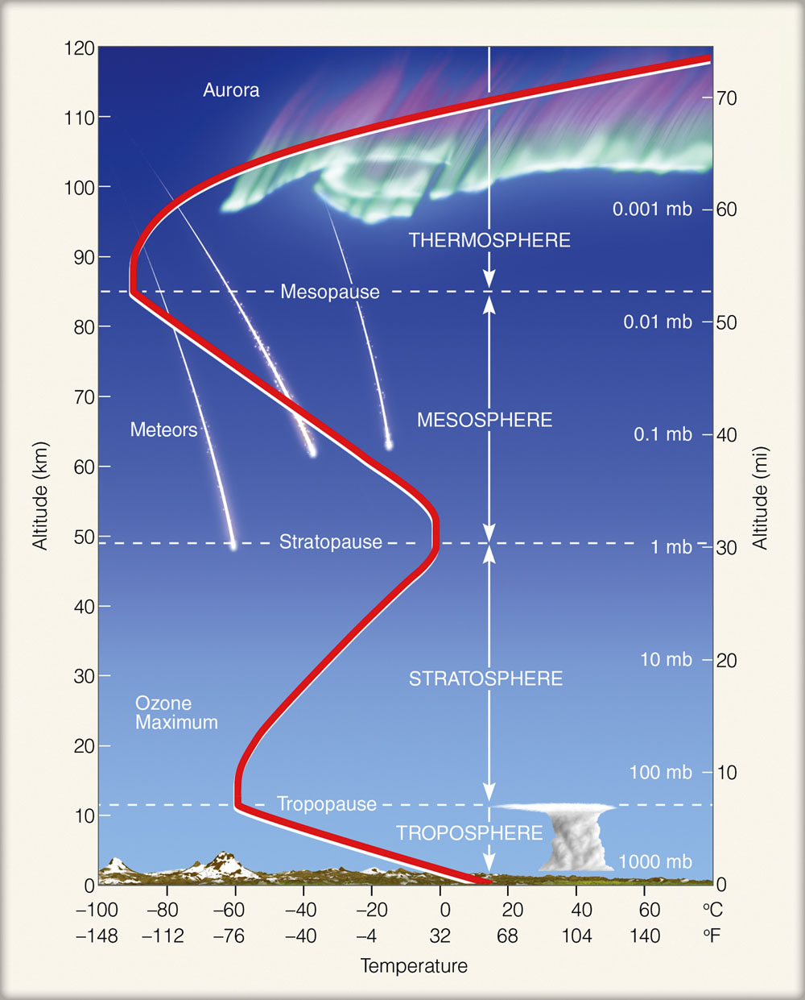
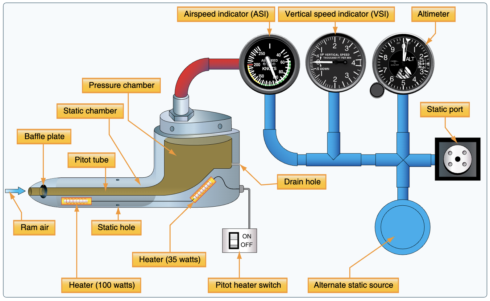
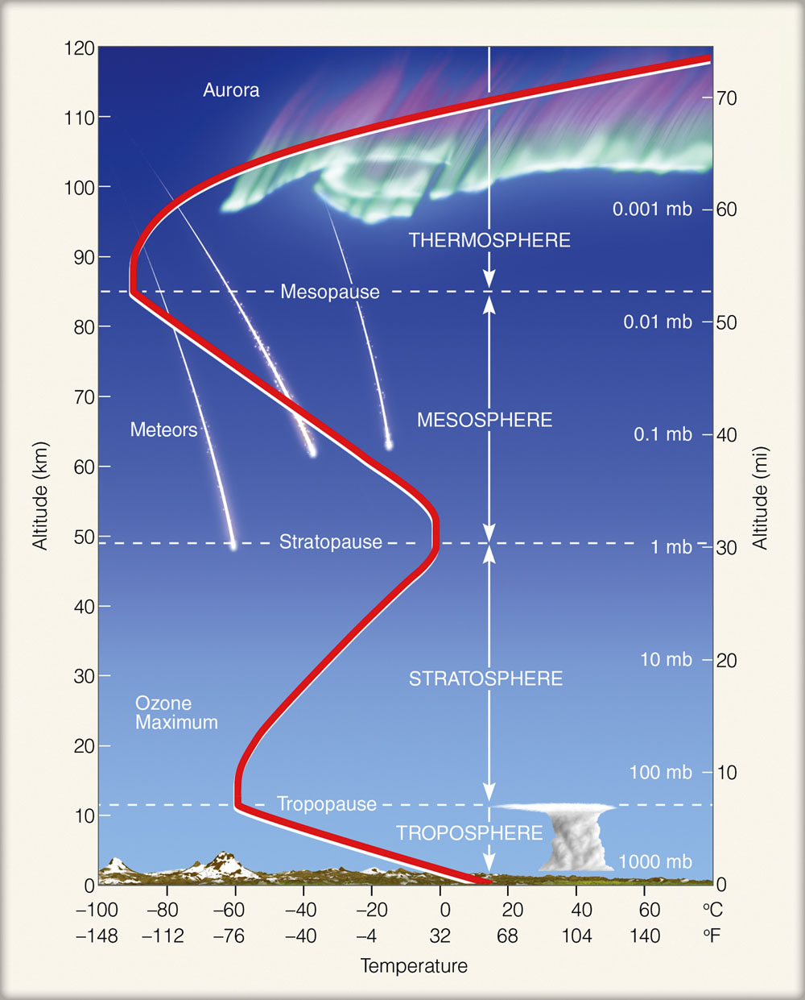
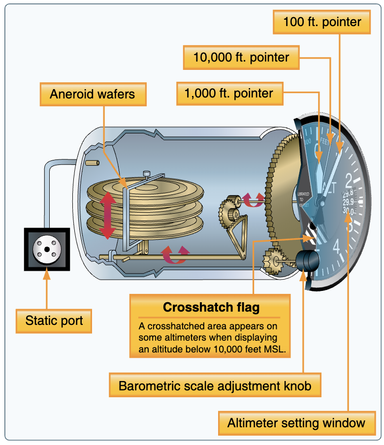
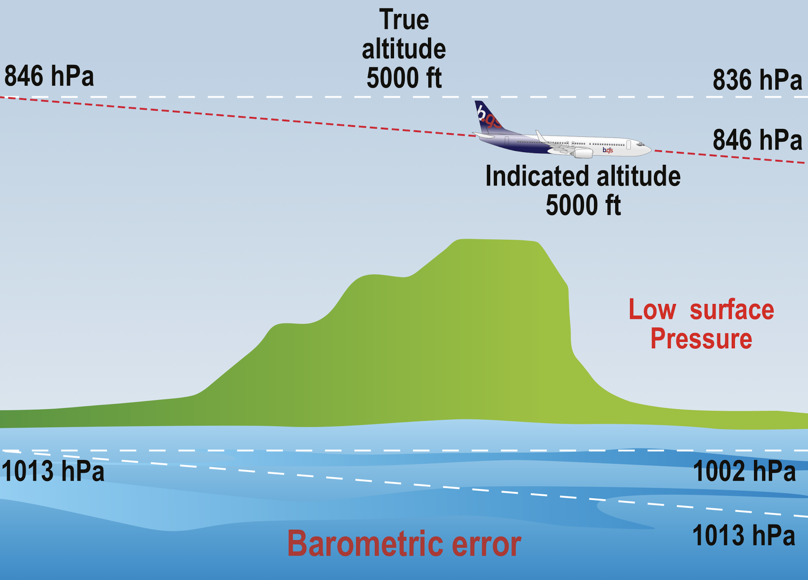
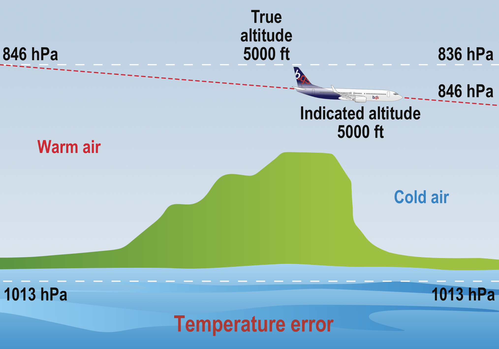

knitr::include_graphics("./figures/met-ISA-atmosphere.jpg")
flight instruments
navigation instruments
other instruments/systems
Speed (of faster) aircraft create temperature measurement problem. Measurement results are distorted by frictional heating, ditto on static air accelerated with aircraft and used to measure temperature.
increase in sensed temperature is called * kinetic heating (or ram rise) *. The kinetic heating/ram rise in temperature is due to adiabatic compression.
TAT = SAT (OAT) + ram rise
The (total) conversion of kinetic energy to heat can be calculated:
\[TAT = SAT * (1 + 0.2 M^2) \] Temperatures SAT/TAT in Kelvin K (!= Celsius or Fahrenheit)
Conversion loss as there is no perfect thermodynamic conversion. –> conversion factor, i.e., recovery factor K, K < 1. Typical values K =0.9.
\[TAT = SAT * (1 + 0.2 *K * M^2) \] \[SAT (or\ OAT) = \frac{TAT}{1 + 0.2 * K * M^2}\]
Example: Mach number 0.7, measured impact temp = -48deg C, recovery factor K of 0.85.
TAT in Kelvin: -48C + 273 = 225 K \(M^2\) = 0.7 * 0.7 = 0.49
\[SAT = \frac{255}{1 + 0.2 * 0.85 * 0.49} = \frac{255}{1 + 0.0833} = 208 K\] Kelvin to Celcius: 208 - 273 - -65degC

stationary aircraft (on ground) acted on from all directions by ambient air pressure or static pressure. Statis pressure is the atmospheric pressure.
movement through air “adds” dynamic pressure. Dynamic pressure is the kinetic energy changed to pressure energy/ The dynamic pressure is proportional to aircraft’s speed:
\[dynamic\ pressure = 1/2 * \rho * v^2\]
\(\rho\) air density
\(v\) true velocity of aircraft
Dynamic pressure important as it represents the pressure of air flowing over the aircraft. Thus, relates to lift it creates and drag it experiencies. ~ flying characteristics of an aircraft.
A sensing system detecting the total pressure on the front of the aircraft.
Total pressure = dynamic pressure (movement) + static pressure (background).
To find dynamic pressure = need to separately sense the static (ambient background) pressure.
Bernoulli principle ==> total pressure = dynamic + static pressure ==> dynamic pressure = total pressure - static pressure
Separate measurement of static pressure also useful for height and rate of vertical change (i.e., climb and descent).
Static pressure vents or ports. Holes = vents are placed at right angle to the airflow. This avoids detecting the dynamic pressure.
Some smaller aeroplane (not having multiple sensors) have a selectable standby static source inside the cabin. Unpressurised cabin ~ slightly lower (static) pressure due to aerodynamic suction.
combined pressure heads: measuring both, static and pitot/total pressure. “mast” to ensure sensors are outside boundary layer of aircraft skin. Can have heater element = avoid blockage from icing, drain hole to exit water entering the tube.
Any error in detecting static pressure will give false instrument indications.
The sum total of all such errors is called position error (ex pressure error).
position error:
configuration: typically static sources are sited as far as possibly to be error free ~ some small remaining error which change with aircraft true airspeed and configuration (flaps, gears), and with angle of attack.
Such errors are established in flight testing = thus known ==> calibration cards, or in modern systems programmed out in the air data computer.
Note: standby instruments are not fed through ADC and - even in modern aircraft - have uncorrected position errors.
maneuver: rolling, pitching, or yawing, including random gusts may introduce transient and unpredictable static pressure errors. These can therefore not be programmed out with ADC.
Extreme rolling/pitching unlike with transport aircraft.
Errors related to yawing may be minimised by sitting static ports on both sides of fuselage.
good info: https://aerotoolbox.com/airspeed-indicator/
Your airspeed indicator, put simply, is a scale that measures the difference between the static pressure from your static ports, and the ram pressure (dynamic + static) from your pitot tube The static pressures cancel each other out, and you’re left with dynamic pressure.
The pressure altimeter measures the “barometric” difference in height between pressure levels.
calibration based on standard atmosphere
- (mean) sea level pressure: 1013.25 hPa - sea level density: 1225 g/m^3 - sea level temperature: 15 C - temperature reduces with increasing altitude at 1.98 C per 1000ft + up to 36 090 ft at -56.6C staying constant to + 65617 ft then rising at 3C per 1000ft
knitr::include_graphics("./figures/met-ISA-atmosphere.jpg")
detection of change in static air pressure
Simple altimeter: - aneroid capsule connected to rotating needle
- capsule expands with decreasing ambient air preassure –> higher altitude - subscale allows adjustment to different datum pressure settings (e.g. QNH, standard, …) - rate of pressure decrease with increasing height is not constant ==> non-linear linkage - read-out only correct for ISA condistions

Sensitive altimeters: increased sensitivity by stack of 2 or more capsules (~ increased movement/change); vibrators to overceom static friction; more complex gearing allows to use 3 pointers (10000ft, 1000ft, and 100ft); others use drum or digital display with one pointer.
more modern variants: vibrator and pressure setting digitiser, both require electrical supply; digitised information can be used by transponder (automatic transmission)
servo-assisted altimeters: movement transmitted to a pivoted bar, i.e., the I-bar
capsule stack (increased sensitivity) –> E/I-bar assembly sending signal to servo motor –> complex gearing –> digitiser for transmission of 1013hPa based ALT to transponder
ADC-driven altimeters: fourth generation system using static ambient pressure fed to ADC to calculate altitude referenced to both 1013hPa and selected subscale setting –> transponder , other feed to servo driven instrument or EFIS
accuracy requirements ICAO PANS-OPS (dependent on test/indication range):
QFE/QNH accurately -/+ 20m or 60ft for range of 0-9000m or 0-30000ft
or 25m or 80ft for 0-15000m or 0-50000ft
Position Error: position error can affect altimeter readings. Can be minimised by good design. Error varies with TAS and angle of attack.
Instrument Error: friction in the gearing
hysteresis error: Any capsule based system will encounter problem that the aneroid capsulses themselves are not perfectly elastic and ‘reluctant’ to change shape after being at one pressure for a period of time.
change of sea level pressure from the datum set on altimeter
==> resetting subscale to correct value
 
HIGH pressure to low pressuer - altimeter over-reads; true alt decreases, while shown altitude stay constant HIGH termp to lower temperature - altimeter over-reads, true alt decreases
high-low-high: flying from high pressure/temperature to low pressure/temperature … altimeter show high(er than you are)
ditto for low-high-low
high-to-low, carful go! Im Winter sind the Berge höher@
Temperature error correnction tables
temp error in when flying in warm air –> alt under-read … no issue, as you tend to climb.
flying in cold air mass and at low altitudes! ~ landing!
Accordingly, temperature corrections must be applied to decision heights/altitudes, step down fixes, and even terminal minimum safe altitudes in temperatures of ISA -15C or below!